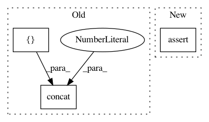

33c803c9ff0f56545a712dc8ec51c0aadf26381d,tensorflow_/tensorflowcv/models/channelnet.py,,simple_group_block,#Any#Any#Any#Any#Any#Any#Any#,341
Before Change
assert (channels % num_groups == 0)
channels_per_group = channels // num_groups
x_out_list = []
if type(x) == list:
x_in_list = x
else:
x_in_list = tf.split(x, num_or_size_splits=num_groups, axis=1, name=name + "/split")
for gi in range(num_groups):
xi_out = dws_multi_block(
x=x_in_list[gi],
channels=channels_per_group,
num_blocks=num_blocks,
dropout_rate=dropout_rate,
training=training,
name=name + "/group{}".format(gi + 1))
x_out_list.append(xi_out)
x_out = tf.concat(x_out_list, axis=1, name=name + "/concat")
return x_out
def pure_conv2d(x,
After Change
Tensor
Resulted tensor.
assert (channels == x.shape[1].value)
for i in range(multi_blocks):
x = channet_dws_conv_block(
x=x,
in_channels=channels,
In pattern: SUPERPATTERN
Frequency: 3
Non-data size: 3
Instances
Project Name: osmr/imgclsmob
Commit Name: 33c803c9ff0f56545a712dc8ec51c0aadf26381d
Time: 2018-12-06
Author: osemery@gmail.com
File Name: tensorflow_/tensorflowcv/models/channelnet.py
Class Name:
Method Name: simple_group_block
Project Name: asyml/texar
Commit Name: b3bf199724ec76c2642d3406cd99f60495100605
Time: 2019-10-21
Author: pengzhi.gao@petuum.com
File Name: texar/tf/modules/embedders/embedder_base.py
Class Name: EmbedderBase
Method Name: _get_dropout_layer
Project Name: asyml/texar
Commit Name: af461df627ef660d1a71b6981dedb4e4b504ba9a
Time: 2017-09-25
Author: junxianh2@gmail.com
File Name: txtgen/modules/connectors/connectors.py
Class Name: StochasticConnector
Method Name: _build